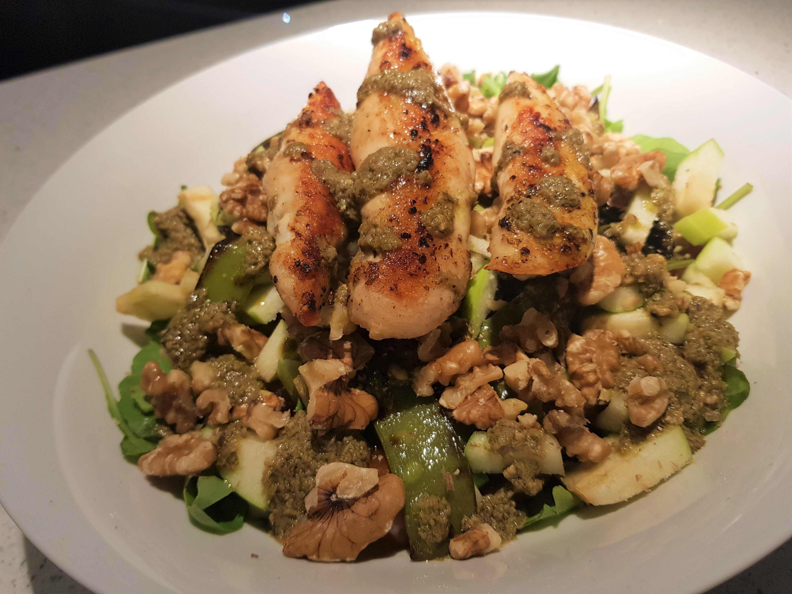

Chicken Granny Smith Salad

Description
A description of the Chicken Granny Smith Salad should go here. Someday.
Ingredients
- Chicken Strips
- A mix of rocca, arugula and basil
- 2 small Granny Smith apples, diced
- 160g Snow Peas
- A handfull of Walnuts, crushed
- Emmental, cut into small cubes
- 1 Lemon
- 1 tbsp Butter
- 2 tbsp Pesto
- 1 tbsp olive oil
- Salt and Pepper
- Chili Flakes (optional)
Steps
- Season the chicken strips with salt, pepper, garlic powder, chili flakes (optional) and lemon zest. Let rest in the fridge for 30 minutes
- Heat up a pan and add butter. Once melted add in the chicken strips and cook both sides
- When the chicken is cooked through, add juice of half of lemon, mix and remove chicken from pan
- Immediately add the cut snow peas into the pan, mix well and let cook, stiring occasionally. Once done, put the cooked snow peas aside a let cool
- For the sauce, mix pesto, olive oil and half a lemon in a bowl, add salt, pepper and chili flakes to taste
- In a salad bowl, add in the mix of Aragula, rocca and Basil, the granny smith, cubed emmental and the snow peas
- Top with the chicken strips, the pesto sauce and crushed walnuts